Math Worksheets
86 printable Math worksheets (PDF) with answer keys: reading comprehension passages, reading trails and more – no prep, filter by grade.
86 resources
Grade
By grade: 2nd Grade · 3rd Grade · 4th Grade · 5th Grade · 7th Grade

Window Art Workshop Shapes Counting Role Play | Winter Math Center Grade 1

Bird Feeder Counting Math Role Play | Winter Math Center Grade 1

Wildlife Park Winter Feeding Math Role Play | Winter Math Center Grade 1

Holiday Package Station Weight Role Play | Christmas Math Center Grade 4

Geometry Reading Comprehension Passages | Math Scavenger Hunt 7-8

The Travel Agency Map Scale Role Play | Winter Math Center Grade 4

The Snowman Workshop Measurement Role Play | Winter Math Center Grade 2

Cookie Bakery Addition Subtraction Role Play | Winter Math Center Grade 1

The Christmas Bakery Weight Role Play | Christmas Math Center Grade 3
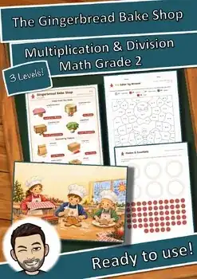
Gingerbread Bake Shop Multiplication Role Play | Winter Math Center Grade 2

Place Value Reading Comprehension Passages | Math Scavenger Hunt 1-2
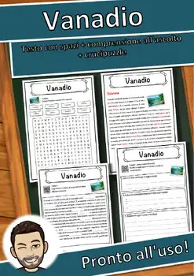
Vanadio – Italian Reading Comprehension Worksheet (Scheda): Cloze & Listening
Torio – Italian Reading Comprehension Worksheet (Scheda): Cloze & Listening
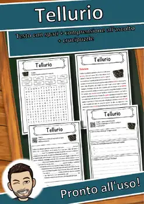
Tellurio – Italian Reading Comprehension Worksheet (Scheda): Cloze & Listening
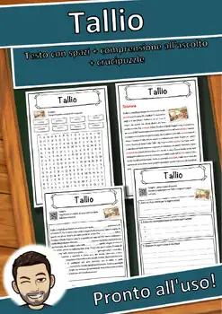
Tallio – Italian Reading Comprehension Worksheet (Scheda): Cloze & Listening
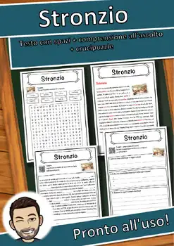
Stronzio – Italian Reading Comprehension Worksheet (Scheda): Cloze & Listening
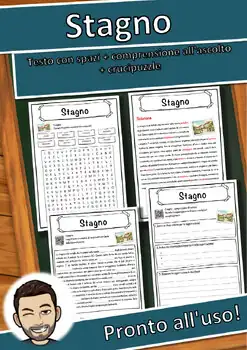
Stagno – Italian Reading Comprehension Worksheet (Scheda): Cloze & Listening
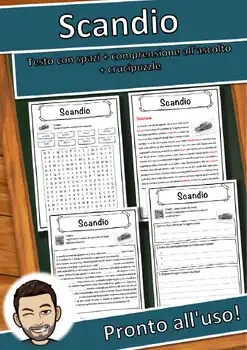
Scandio – Italian Reading Comprehension Worksheet (Scheda): Cloze & Listening
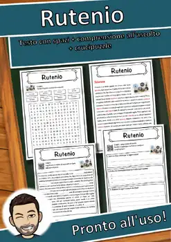
Rutenio – Italian Reading Comprehension Worksheet (Scheda): Cloze & Listening
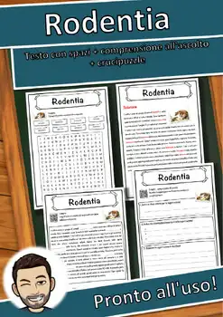
Rodentia – Italian Reading Comprehension Worksheet (Scheda): Cloze & Listening
Renio – Italian Reading Comprehension Worksheet (Scheda): Cloze & Listening
Milione – Italian Reading Comprehension Worksheet (Scheda): Cloze & Listening
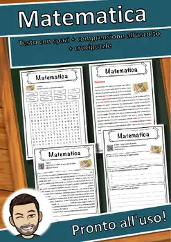
Matematica – Italian Reading Comprehension Worksheet (Scheda): Cloze & Listening
Manganese – Italian Reading Comprehension Worksheet (Scheda): Cloze & Listening
Litio – Italian Reading Comprehension Worksheet (Scheda): Cloze & Listening
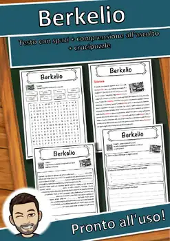
Berkelio – Italian Reading Comprehension Worksheet (Scheda): Cloze & Listening
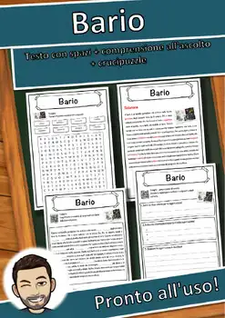
Bario – Italian Reading Comprehension Worksheet (Scheda): Cloze & Listening

Attinio – Italian Reading Comprehension Worksheet (Scheda): Cloze & Listening
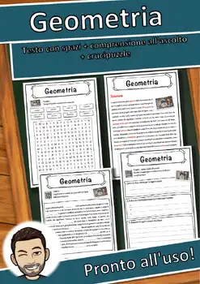
Geometria – Italian Reading Comprehension Worksheet (Scheda): Cloze & Listening
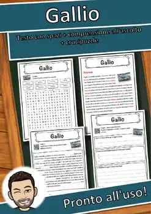
Gallio – Italian Reading Comprehension Worksheet (Scheda): Cloze & Listening

Olmio – Italian Reading Comprehension Worksheet (Scheda): Cloze & Listening
Numero – Italian Reading Comprehension Worksheet (Scheda): Cloze & Listening
Nichel – Italian Reading Comprehension Worksheet (Scheda): Cloze & Listening
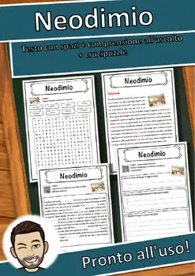
Neodimio – Italian Reading Comprehension Worksheet (Scheda): Cloze & Listening
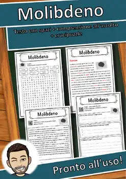
Molibdeno – Italian Reading Comprehension Worksheet (Scheda): Cloze & Listening
Meitnerio – Italian Reading Comprehension Worksheet (Scheda): Cloze & Listening

Lantanio – Italian Reading: Cloze Text, Listening Task & Word Search (Scheda)
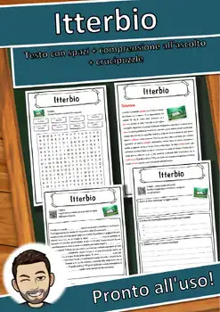
Itterbio – Italian Reading: Cloze Text, Listening Task & Word Search (Scheda)
Iridio – Italian Reading: Cloze Text, Listening Task & Word Search (Scheda)
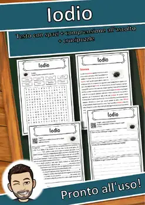
Iodio – Italian Reading: Cloze Text, Listening Task & Word Search (Scheda)
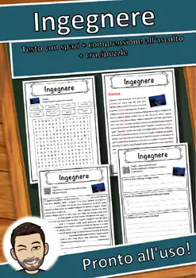
Ingegnere – Italian Reading: Cloze Text, Listening Task & Word Search (Scheda)
Gadolinio – Italian Reading: Cloze Text, Listening Task & Word Search (Scheda)
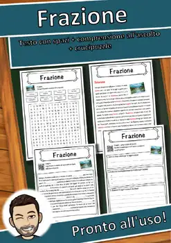
Frazione – Italian Reading: Cloze Text, Listening Task & Word Search (Scheda)
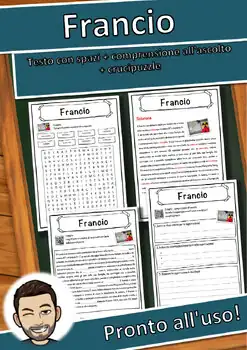
Francio – Italian Reading: Cloze Text, Listening Task & Word Search (Scheda)
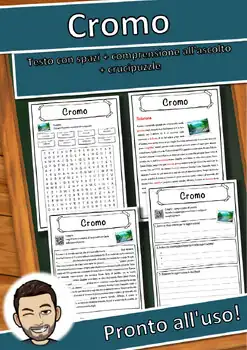
Cromo – Italian Reading: Cloze Text, Listening Task & Word Search (Scheda)
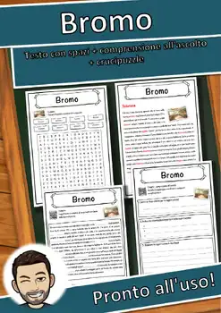
Bromo – Italian Reading: Cloze Text, Listening Task & Word Search (Scheda)
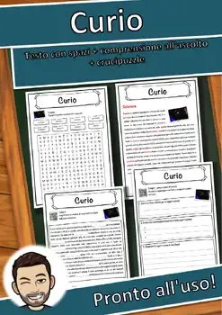
Curio – Italian Reading: Cloze Text, Listening Task & Word Search (Scheda)
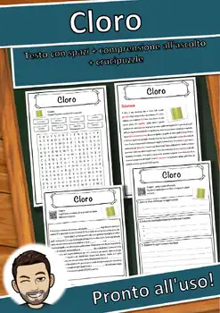
Cloro – Italian Reading: Cloze Text, Listening Task & Word Search (Scheda)
No resources found – try a different search term or filter.